Utilisation de Github
TP Session 6
20 octobre 2026
Créer un compte GitHub
Question 1
Rendez-vous sur le site web GitHub. Rentrez votre adresse e-mail puis cliquez sur le bouton “Inscrivez-vous sur GitHub”
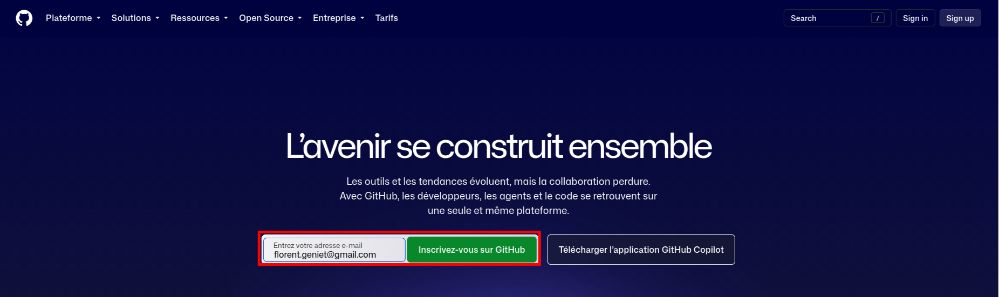
Important
N’utilisez pas votre adresse e-mail Géodata Paris pour créer votre compte GitHub. Cette adresse sera supprimée à la fin de votre scolarité.
Question 2
Remplissez le formulaire avec les informations requises puis finalisez l’inscription.

Question 3
Connectez vous ensuite sur votre nouveau compte. Vous arrivez sur une page d’accueil ressemblant à l’image ci-dessous.
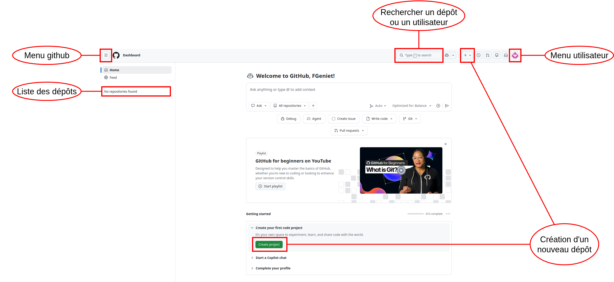
Créer un token Github
Question 4
Allez dans le menu utilisateur, sélectionnez les paramètres, puis allez dans la section “Credentials”. Vous arrivez sur un menu permettant de gérer les options d’identifications.
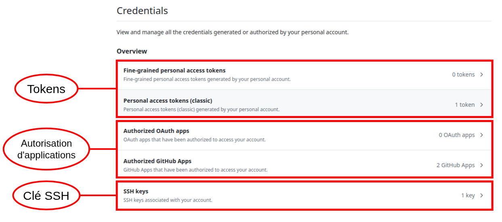
Authentification avec GitHub
Pour cloner un dépôt privé ou pousser des modifications vers GitHub, il faut s’authentifier.
GitHub n’autorise plus l’authentification par mot de passe pour les opérations Git.
Plusieurs solutions existent :
- Token d’accès (PAT)
- Autorisation d’une application
- Clé SSH
Token d’accès personnel (PAT)
- Mot de passe généré automatiquement
- Droits configurables
- Plusieurs tokens possibles par compte
Application autorisée
- Connexion via GitHub
- L’application reçoit une autorisation
- Plus besoin de saisir ses identifiants ensuite
Authentification par SSH
Le protocole SSH repose sur une paire de clés :
- Clé privée : conservée sur votre ordinateur
- Clé publique : transmise à GitHub
GitHub utilise votre clé publique pour vérifier votre identité et sécuriser les échanges.
Question 5
- Sélectionnez l’option “personnal access token (classic)”
- choisissez “generate new token (classic)”. Donnez un nom au token, et sélectionnez les actions que ce token doit permettre d’effectuer
Dans notre cas, on se contentera des actions liées aux repositories (option “repo”).
- Ensuite validez en cliquant sur “generate token”.
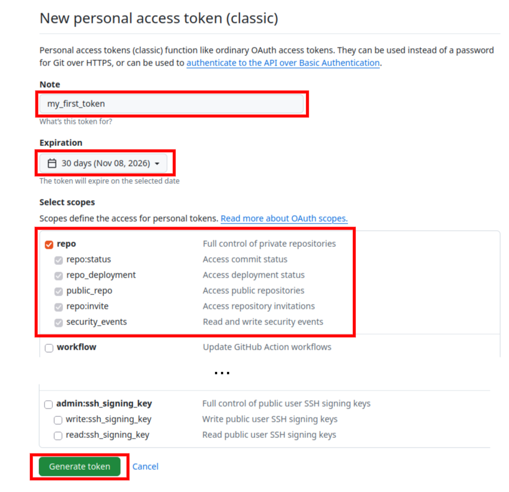
- Copiez ensuite le token et collez le dans un nouveau fichier texte.
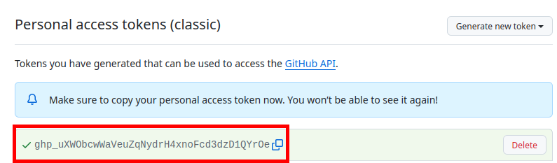
Création d’un nouveau dépôt sur GitHub
Question 6
On va créer un dépôt git, mais contrairement au cours 2, on va le faire directement sur GitHub.
- Cliquez sur le bouton “Create project”. Une nouvelle fenêtre s’ouvre pour paramétrer votre nouveau dépôt.
- Créez un dépôt privé avec un README généré automatiquement.
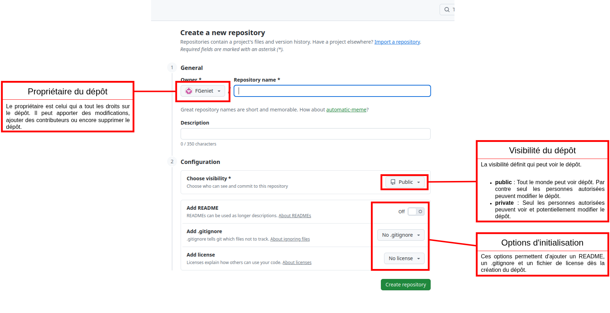
Question 7
Récupérez le projet sur votre ordinateur grâce à la commande git clone.
Communication entre GitHub et un dépôt local
Question 8
En local sur votre ordinateur, créez une nouvelle branche develop et placez vous sur cette branche.
Question 9
Écrivez une description du projet dans le README.
Question 10
Faites un commit avec ce changement, puis poussez ces changements avec la commande git push.
Vous obtenez un message d’erreur : fatal: The current branch develop has no upstream branch. Cette erreur se produit car on essaie de pousser une branche qui n’existe pas encore sur le dépôt GitHub.
Probleme
Pour régler ce problème, il faut indiquer à git de créer une nouvelle branche équivalente sur le dépôt GitHub. On fait ça en rajoutant l’options --set-upstream origin develop à la commande push.
Le terme origin désigne le serveur à partir duquel on a cloné notre dépôt, ici il s’agit de GitHub.
- Lancez la commande , puis retournez sur la page d’accueil de votre projet sur github et rechargez la. Le README affiché sur cette page d’accueil a-t-il changé ? Si non, que faire pour afficher la nouvelle version ?
Question 11
Créez une nouvelle branche calcul_de_distances sur votre projet dans github. Attention à bien prendre la branche develop comme source de cette nouvelle branche.
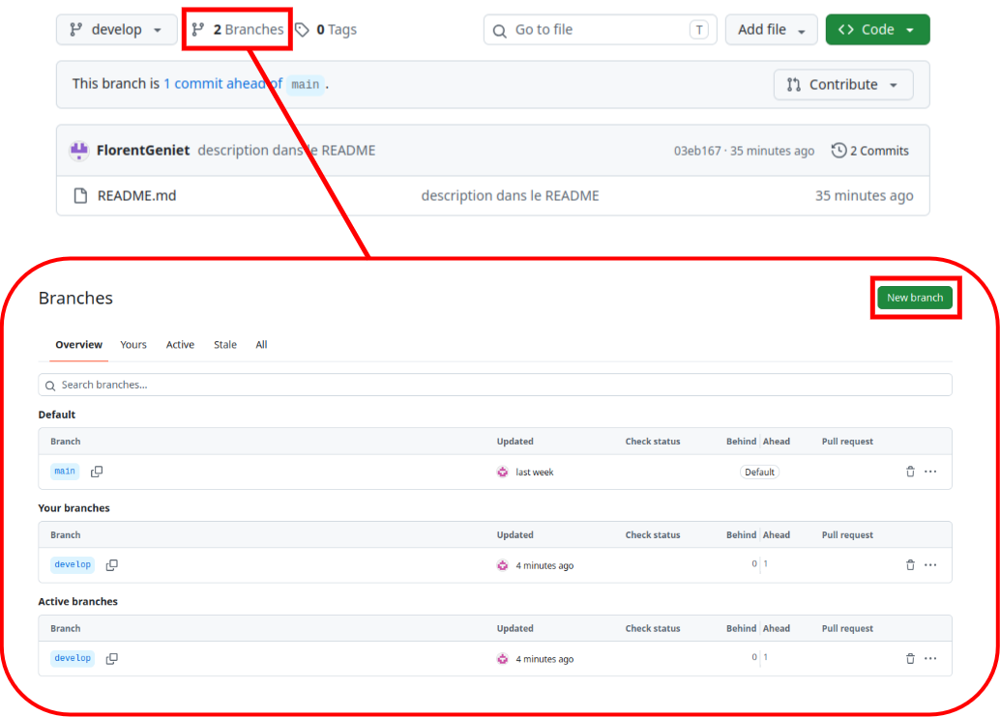
Question 12
Toujours sur GitHub, assurez-vous que vous êtes bien sur la nouvelle branche, puis modifiez le README pour ajouter une section “fonctionnalités” contenant une liste à puces avec un item “calcul des distances”.
Question 13
- Sur votre dépôt local, récupérez les modifications avec la commande
git pull - puis placez vous dans la branche calcul_des_distances
Question 14
- Créez un dossier
src, - puis créez un fichier
calcul_distances.pydans le dossiersrc. - Dans ce fichier, créez une fonction calculant la distance entre deux points 3D
(vous pourrez vous aider de la bibliothèque math pour calculer le calcul de la racine carrée).
La signature de la fonction est :
Question 15
Faites un commit, puis poussez vos modifications sur GitHub.
Retournez sur github. Créez une pull request pour fusionner la branche calcul_de_distances dans la branche develop.
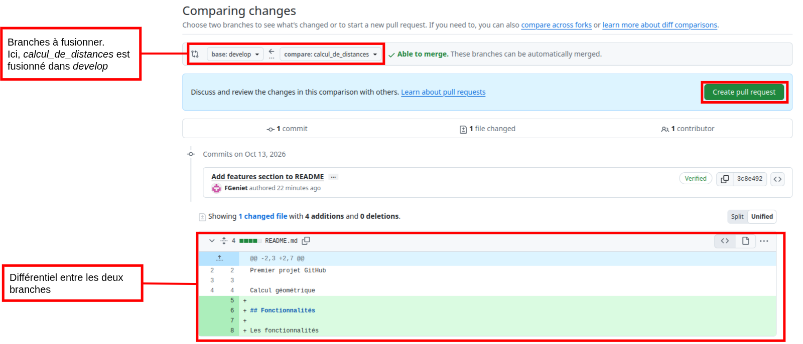
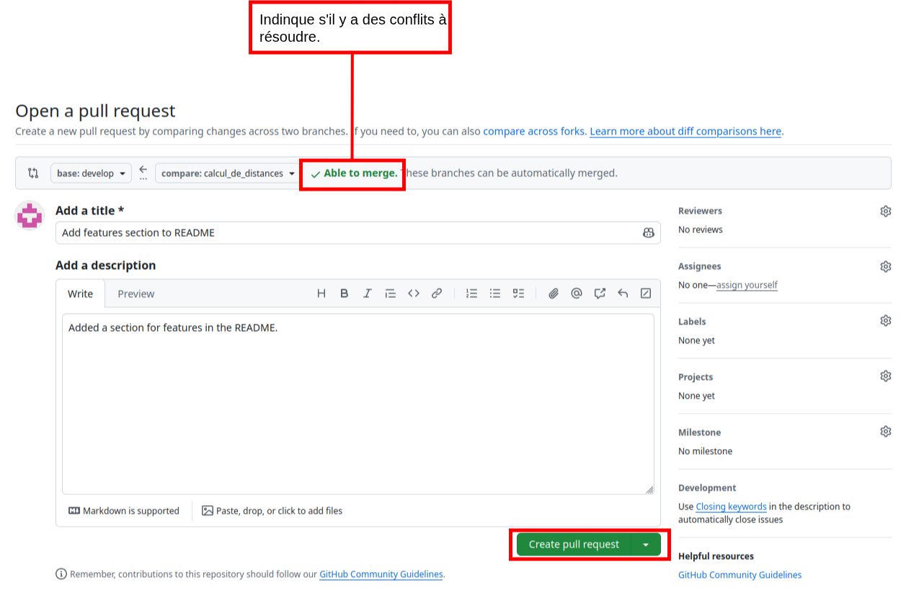
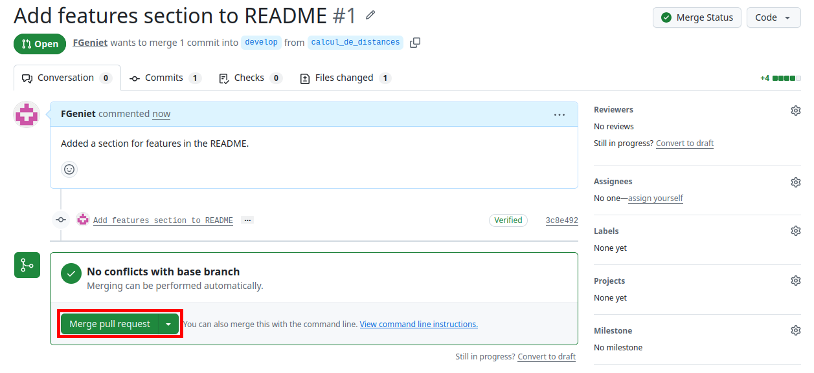
Question 16
Retournez sur votre dépôt local.
Ne faites PAS de
git pullpour l’instant !Déplacez vous sur la branche develop, puis créez une nouvelle branche calcul_perimetre.
Recréez le dossier
src, puis créez dedans un fichiercalcul_perimetre.py, et copiez le code suivant dedans :
Question 17
Faites un commit, puis replacez vous dans la branche develop.
Question 18
Faites une fusion de calcul_perimetre dans develop.
Question 19
Poussez vos modifications. Vous obtenez une erreur car vous ne pouvez pas pousser des modifications sur un dépôt distant si votre dépôt n’est pas à jour avec ce dépôt.
Pour régler ce problème, faites un git pull, puis retentez le git push.
Si vous obtenez un message d’erreur lors du git pull vous demandant de réconcilier des branches divergentes, tapez la commande git config pull.rebase false, puis retentez le git pull et le git push.
Question 20
Retournez sur GitHub, et placez vous dans la branche develop.
Modifiez le fichier
calcul_perimetre.pyen codant le corps de la fonctionperimetre_polygone.
Pour cela, il faudra faire appel à la fonction distance_pt_pt définie dans le fichier calcul_distances.py.
Question 21
Sur votre git local, écrivez le code suivant dans le corps de la fonction perimetre_polygone.
Assurez-vous que vous êtes bien sur la branche develop avant de coder.
Question 22
Faites un commit avec vos changements, puis mettez votre dépôt à jour avec un pull.
Git essaie de fusionner les modifications, mais obtient un conflit. Il vous faut donc résoudre le conflit.
Résolvez le conflit (en gardant la version venant de GitHub) puis validez la fusion avec la commande git merge --continue.
Supprimer toutes traces
Question 23
Pour finir, supprimez votre projet sur votre gitHub .
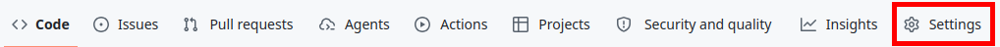
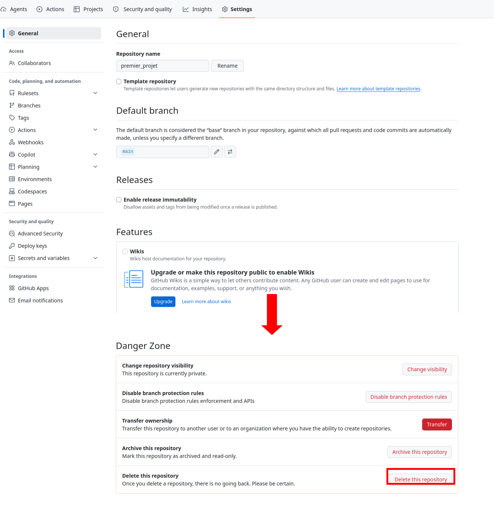
Question 24
- Supprimer un token ou un mot de passe stocké par le Git Credential Manager sous Windows
- Ouvrez le menu Démarrer, tapez Gestionnaire d’identification (ou Credential Manager si votre système est en anglais) et validez.
- Cliquez sur l’onglet Informations d’identification Windows.
- Faites défiler la liste vers le bas jusqu’à la section Informations d’identification génériques.
- Cherchez la ligne correspondant à votre hébergeur Git (par exemple : git:https://github.com ou git:https://gitlab.com).
- Déroulez la ligne en cliquant dessus, puis cliquez sur Supprimer